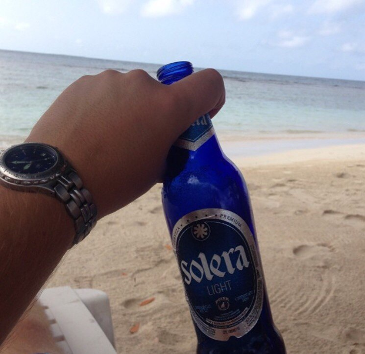
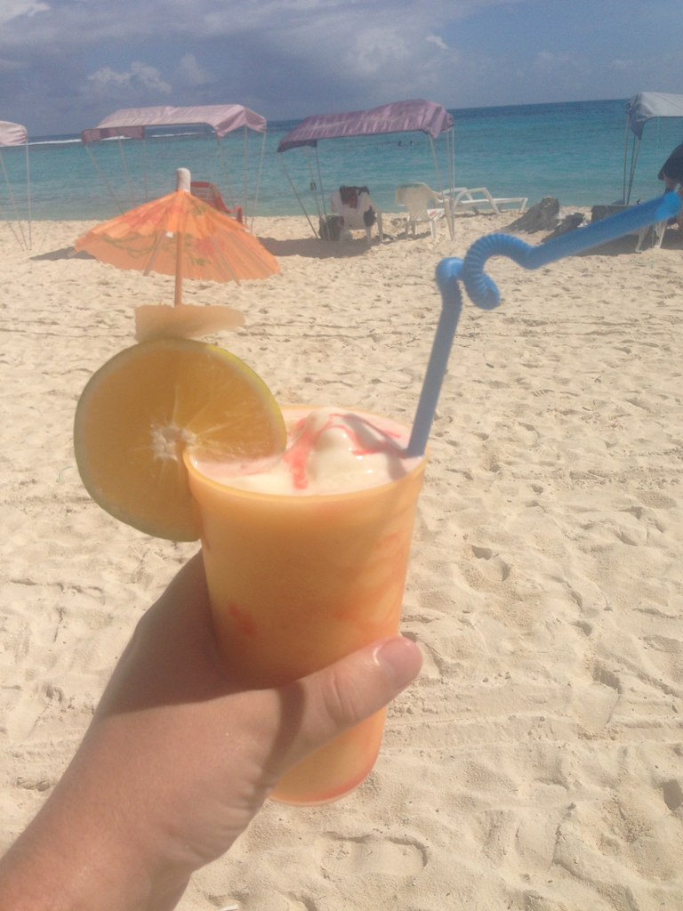

- Холодно лишь под кондиционером
- Очень красивая природа
- Чудесной красоты девушки
- Утро начинается не с cafe
- Вероятность дождя зимой нулевая
- А вот летом наоборот
- Йогурт хорошо, а арепа лучше
- Танцы и музыка
- И самый вкусный в мире ром

Праздники страны
Их гораздо больше, чем у нас
И поэтому утро может начинаться например вот так.
 Ну не дома же сидеть в выходной. На работу-то не надо - праздник!
Вот основные, которые празднуются во всей стране:
| Праздник | Когда | Примечание |
|---|---|---|
| Новый Год | 1 января | Все понятно |
| Карнавал | 8-9 февраля | Да, он не только в Бразилии |
| Святая неделя | 24-25 марта | Аналог нашей Пасхи, по факту празднуется всю неделю |
| Воскрешение | Последнее воскресенье марта | Собственно сама Пасха, когда Христос воскрес |
| Декларации Независимости | 19 апреля | Народное восстание в Каракасе в 1810-м году. Начало войны за независимость Венесуэлы от Испании |
| День труда | 1 мая | Все, как у нас |
| Битва при Карабобо | 24 июня | Решающее сражение в борьбе за независимость от Испании |
| День независимости | 5 июля | Полной и окончательной |
| День рождения Симона Боливара | 24 июля | Национальный герой номер один |
| День нации | 12 октября | День сопротивления коренных народов |
| Рождество | 24-25 декабря | У них оно гораздо популярнее Нового года |
Маленькое дополнение
Есть еще немало праздников, которые отмечаются локально. Например день Маракая, день штата Арагуа, день еще чего-нибудь, и все, никто не работает. Новый год и Рождество отмечаются уже после 15 декабря. В середине ноября уже везде стоят елки. Все стараются уйти в отпуска, и по факту они не просыхают месяц, числа до 10 января. Стройки стояли, т.к. никто не работал.
В сезоне 2011-2012 бейсбольная команда Маракая "Tigres de Aragua" (Тигры из Арагуа) выиграла чемпионат страны. Губернатор тут же объявил следующий день городским праздником и выходным днем.
наверх